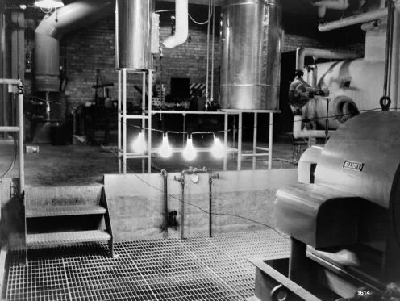
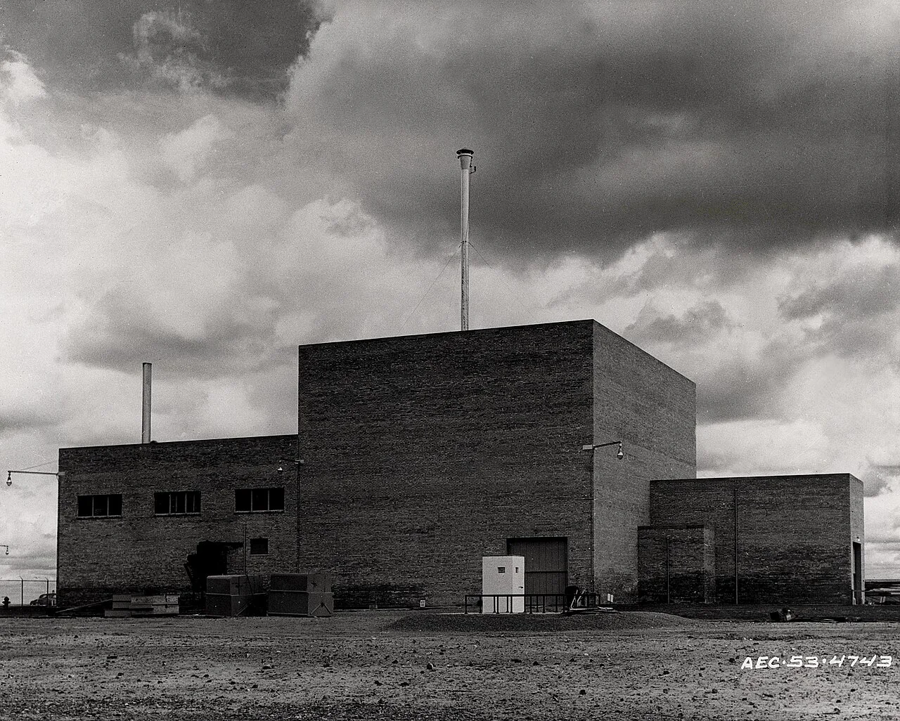
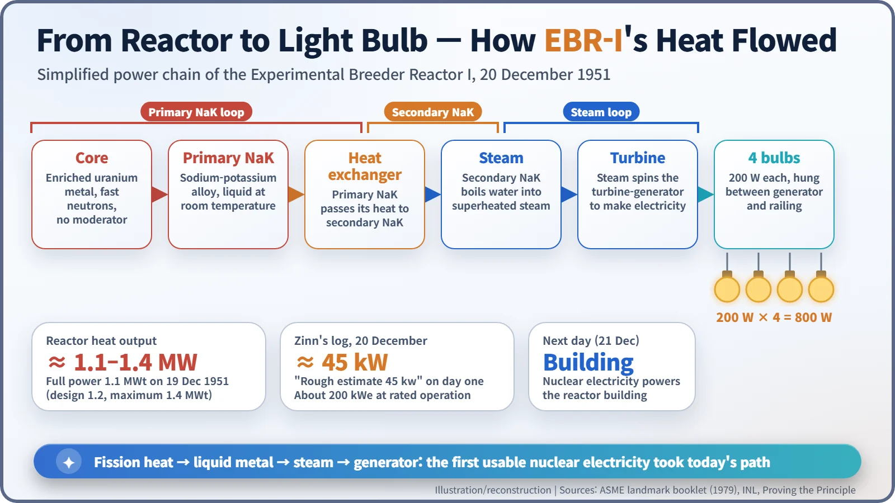
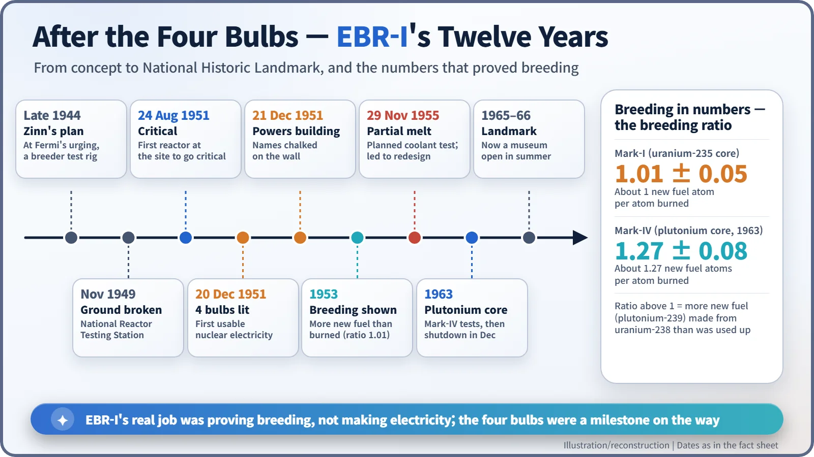
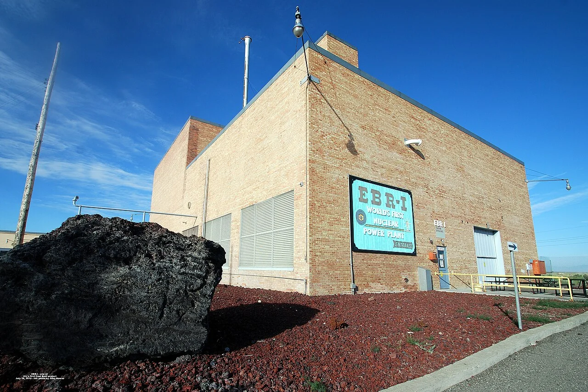

Nuclear History · 139
Four Bulbs, 800 Watts — EBR-I Makes the First Usable Nuclear Electricity (1951)
Four 200-watt bulbs on 20 December 1951, a building powered the next day, and a breeding ratio of 1.01 that was the reactor's real goal.
On 20 December 1951, electricity from the Experimental Breeder Reactor I (EBR-I) in the Idaho desert lit four 200-watt light bulbs, the first time a reactor produced a usable amount of electricity. The next day it powered its own building. Yet the bulbs were a side show: EBR-I's real mission was to prove that a reactor could breed more fuel than it burned, which it did in 1953.
Eight hundred watts
Eight hundred watts is roughly what a kitchen microwave draws. A large modern nuclear plant typically puts out around a million kilowatts. The second number grew out of the first. On 20 December 1951, in the high desert of eastern Idaho, electricity made by a nuclear reactor lit four 200-watt light bulbs. [1] [2]

A dream from an age of scarce uranium
The story starts in late 1944. Walter Zinn (1906–2000), the physicist who had supervised the construction of CP-1, the first nuclear reactor, began planning a small demonstration reactor at Enrico Fermi's urging. At the time no large uranium deposits were known, and in the words of the American Society of Mechanical Engineers (ASME), "Uranium was in very short supply." So the goal was ambitious: a reactor that, while burning fuel, would make more new fuel than it consumed. That is a breeder. [1]
The idea works like this. When uranium-235 splits, some of the neutrons it releases fly out of the core into a surrounding "blanket" of natural uranium. There they are absorbed by uranium-238, which after a couple of decay steps becomes plutonium-239, a fuel in its own right. Think of a campfire that dries out the damp logs stacked beside it, turning them into firewood for tomorrow.
That is why EBR-I used no moderator to slow its neutrons down: fast neutrons are less likely to be wasted in unwanted absorptions. Instead of water, its coolant was NaK, a sodium-potassium alloy that stays liquid at room temperature, carries heat well, and neither slows nor swallows many neutrons. The design took shape between 1945 and 1949, when fast-neutron data, liquid-metal pumps and the behaviour of materials in hot, radioactive sodium were all barely understood. [1]

Waiting three months for 7.5 kilograms
The site was the National Reactor Testing Station (NRTS), today's Idaho National Laboratory. More than 50 reactors would eventually be built there; EBR-I was the first. Foundation work began in November 1949, the building was finished on 10 April 1951, and reactor assembly started that May. [1]
It was not smooth sailing. The first load of highly enriched uranium, 40 kg in 179 fuel rods, was not enough to reach criticality, the point at which a chain reaction sustains itself. Zinn asked for 7.5 kg more, which had to be released from military stocks, and the delay cost three months. On 24 August 1951 EBR-I finally went critical, the first reactor at the testing station to do so. [2]
20 December: between the generator and the railing
On 19 December the reactor reached full power, 1.1 megawatts of heat. The next day the team hung four 200-watt bulbs between the generator and a railing. Early in the afternoon the bulbs glowed brightly. The records disagree slightly on the time: INL's official history says 1:23 p.m., while the ASME landmark booklet says the first electricity began flowing at 1:50 p.m. Zinn's entry in the operating log was brief: [1] [2]
"Electricity flows from atomic energy. Rough estimate indicates 45 kw."

On 21 December the experiment was repeated, and this time nuclear electricity powered the reactor building itself. At rated operation EBR-I produced about 200 kilowatts of electricity. Zinn then chalked his name on a concrete wall and had the staff present sign it one after another. In 1995 a plaque was added with the names of the women who had worked there. [2]
The bulbs were a souvenir; the real job was breeding
ASME is blunt about it: "EBR-I's real mission was not to prove that electricity could be generated by a nuclear reactor." The real mission was breeding. In early 1953, careful analysis showed that more than one new fuel atom was being created for every atom burned. The first core, Mark-I, had a breeding ratio of 1.01 ± 0.05. In 1963 a plutonium core, Mark-IV, measured 1.27 ± 0.08. [1]
EBR-I also taught a hard lesson. On 29 November 1955, during a planned test in which coolant flow was deliberately stopped, the power rose faster than expected and part of the core melted. Investigators traced the cause to thermal expansion and bowing of the fuel rods and their support plate, and a mechanical redesign removed the instability. It became an early milestone in fast-reactor safety research. [1]

"World's First Nuclear Power Plant"
EBR-I ended operations at the end of 1963 and became a National Historic Landmark in 1965–66 (sources give December 1965 or August 1966). Today it is a museum open in the summer months, and a sign on its wall reads "World's First Nuclear Power Plant." [1] [3]

Strictly speaking, EBR-I was the first reactor to generate a usable amount of electricity. The first nuclear plant to feed a power grid was Obninsk in the Soviet Union in 1954, and in 1955 another Idaho reactor, BORAX-III, supplied power to the nearby town of Arco. There are also claims that a small device at Oak Ridge lit bulbs even earlier. Still, the history of nuclear power began not with a giant station but with four light bulbs. [4] [5]